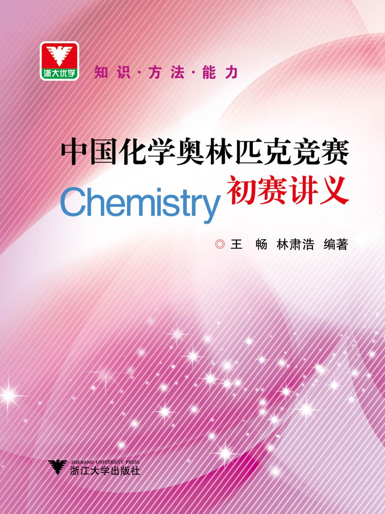

中国化学奥林匹克竞赛初赛讲义
知识·方法·能力
出版信息

王畅, 林肃浩. 中国化学奥林匹克竞赛初赛讲义. 杭州: 浙江大学出版社, 2023
ISBN: 978-7-308-23901-1（2023 年 6 月第一版，2024 年 6 月第二次印刷）
勘误 & 补充材料
本书的写作和排版历经五年波折，限于作者水平，在文字质量、排版规范和答案的详细程度上有可能不尽如人意，恳请大家批评指正。已知的书中的错误可在勘误表中找到：第一次印刷勘误表、第二次印刷勘误表。如需要提交新的错误可按照下面信息反馈的指引操作。这里还有对一些比较困难的题目的补充讲解，如果你希望分析某个题目，亦可以写信到作者邮箱。 另外，习题 12.63 的波谱资料可以在此处取得。
信息反馈
请写信到 cchobook@126.com。来信可匿名也可实名（勘误推荐实名，以便声明感谢）。
致谢
本书正文部分由王畅编写，第 1~5 讲习题的答案与提示由钟书辰编写，第 6~13 讲的答案与提示及附录由王畅编写，全书由林肃浩老师审校、统稿。绝大部分习题曾经杭州二中 2019、2020 级化学竞赛小组学生校验过，在此谨向他们致谢！此外，浙江大学出版社的沈国明编辑提供了排版上的有力支持和专业意见，在此一并致谢。
本网页的 CSS 样式取自这里，各种补充材料的 TeX 模板取自这里。
购买信息
只需要在各大电商网站上搜索“中国化学奥林匹克竞赛初赛讲义”即可找到本书。以下是部分购买链接，感谢你支持作者的劳动！
- 天猫 https://detail.tmall.com/item.htm?id=729237784638
- 当当 http://product.dangdang.com/11485543733.html
- 京东 https://item.jd.com/14072332.html
需要特别注意的是，部分购买链接中对作者的介绍存在不实信息，未经作者核可即发布。其中，王畅在 2016 年初赛为浙江省第 19 名，在 2017 年初赛为浙江省第 2 名，决赛为第 48 名且未进入国家集训队，亦未“保送”元培学院，请注意甄别。
作者的话 & 如何使用
《笑傲江湖》里有一个“剑宗”、“气宗”之辨，以前参赛的时候，我听说善于解题的选手是“剑宗”，喜欢读书的选手是“气宗”。按金庸的写法显然是后者胜，许多人也这么看竞赛选手。作为一个历经了两届 CChO 比赛的选手，我倒认为优秀的推理、解题能力和对物理、化学原理的准确理解才是屡试不爽、百战百胜的大杀器，是“内功”，而纷繁的知识的唯象经验是花里胡哨的“招式”。所以，竞赛本身应当是以基于演绎的解题为主体的——这也是本书内容编排的核心哲学和独特之处以上皆为作者个人观点，有待进一步确证。。
承上所述，本书在讲解知识性内容时极为强调基本化学原理——只有在头脑中有清晰的化学原理，才能对物质的结构和性质作出合理的解释和预测，统一、自洽、以不变应万变的理论是知识部分的核心。相对应的则是比较反对无谓的知识扩充，即便是唯象的知识，我们也一律采用举一反三的方式处理更进一步，我提倡通过解推断题获得描述性化学知识的范式。。除去知识性内容，本书更加重视解题。解题的核心是推断能力和计算能力——推断是指对完全陌生的物质能够借助思维的力量解题，而不是脑中的描述性知识“秒题”；计算是指能对复杂的系统给出分析以及能耐心、无错误地应对较大的计算量。对此书中还给出了大量的与时俱进的解题技巧和富有挑战性的习题，部分习题还附有参考文献供参考。
基于上述特点，本书阅读起来必然不容易。也许某些部分的理论比较抽象，也许某些习题难度颇大令人百思不得其解——理论部分的讲解可能惜字如金，题目的提示和解答通常也点到为止。这主要是为了鼓励大家多思考，多总结。由于本书不是面面俱到的教程，因此初入竞赛的同学应当将书中的例子、习题和基本的教材结合起来使用，最好能进行教师指导下的小组学习。而对于已经有一定的经验的同学，则完全可以独立地利用书中的知识和习题提高自己的解题能力。本书也可以供相关教师参考。
希望各位参赛选手能在本书中获得独特的提升！